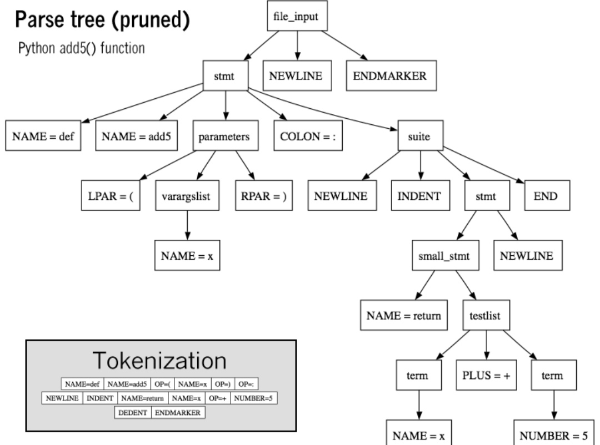

Elements of Programming languages
Links:
1-syntex:
A programming language's surface form is known as its syntax. Most programming languages are purely textual; they use sequences of text including words, numbers, and punctuation, much like written natural languages. On the other hand, there are some programming languages which are more graphical in nature, using visual relationships between symbols to specify a program. The syntax of a language describes the possible combinations of symbols that form a syntactically correct program. The meaning given to a combination of symbols is handled by semantics either formal or hard-coded in a reference implementation . Since most languages are textual, this article discusses textual syntax

2- Semantics:
The static semantics defines restrictions on the structure of valid texts that are hard or impossible to express in standard syntactic formalisms. For compiled languages, static semantics essentially include those semantic rules that can be checked at compile time. Examples include checking that every identifier is declared before it is used (in languages that require such declarations) or that the labels on the arms of a case statement are distinct. Many important restrictions of this type, like checking that identifiers are used in the appropriate context and The dynamic semantics Once data has been specified, the machine must be instructed to perform operations on the data. For example, the semantics may define the strategy by which expressions are evaluated to values, or the manner in which control structures conditionally execute statements. The dynamic semantics also known also known as
execution semantics of a language defines how and when the various constructs of a language should produce a program behavior